基于虚拟电信公司数据的生存分析报告
1. 总述
生存分析是一种统计方法，主要用于分析时间到特定事件发生的数据，核心目的是估算和比较不同组的生存概率
本次生存分析针对虚拟电信公司数据，目的是预测客户在一定时间内的生存（未流失）概率，特别考虑了在某些条件下客户是否会加速流失的问题，并以此评估客户生涯价值
2. 数据导入
建立数据库 `survival_analysis`，并在其中建立原始数据表 `bronze_customers`，和经过处理的数据表 `silver_monthly_customers` 向数据库的 table 导入数据，以便开展之后的生存分析：
其中，`Tenure` 与 `Churn` 两列数据对于生存分析非常重要
- Tenure（服务期限）：客户与公司保持订阅关系的时间
- Churn（客户流失）：一个布尔值，表示客户是否仍然是订阅用户
3. Kaplan-Meier 模型
用 Kaplan-Meier 构建生存概率曲线，曲线整体较为平滑，在 timeline 的初期和默契，生存概率下降速率较大
由 Kaplan-Meier 模型计算得生存时间中位数为 34，即总体客户的取消订阅的时间中位数为 34 个月

接下来评估协变量水平的生存概率，Kaplan-Meier模型适用于单变量分析，这里考虑在单变量取不同值时，各组的生存曲线是否有显著的不同，理想情况（零假设）为各组之间有显著的差异
绘制按各协变量分组的 Kaplan-Meier 曲线，并进行 Log-rank 检验，图中曲线有明显区别或Log-rank 检验p值小于0.05，表示该协变量取值显著影响生存概率曲线
gender：两组曲线十分接近，用Log-rank进一步检测，零假设为两组曲线无显著性差异，gender对应的p值为0.2045，大于0.05，当显著性水平为0.05时，我们可以认为这两个分组在统计学上是等效的

onlineSecurity：各曲线间有明显差异，可以认为这种该协变量取值差异会显著影响生存概率曲线

seniorCitizen：两组曲线十分接近，但Log-rank 检验显示有明显差异，可以认为这种该协变量取值差异会显著影响生存概率曲线
partner：各曲线间有明显差异，可以认为这种该协变量取值差异会显著影响生存概率曲线

dependents：各曲线间有明显差异，可以认为这种该协变量取值差异会显著影响生存概率曲线
phoneService：两组曲线十分接近，用Log-rank进一步检测，phoneService对应的p值为0.3776，可以认为这两个分组在统计学上是等效的
multipleLines：据图表显示，可以认为这种该协变量取值差异会显著影响生存概率曲线

internetService：据图表显示，可以认为这种该协变量取值差异会显著影响生存概率曲线
streamingTV：据图表显示，可以认为这种该协变量取值差异会显著影响生存概率曲线

streamingMovies：据图表显示，可以认为这种该协变量取值差异会显著影响生存概率曲线

onlineBackup：据图表显示，可以认为这种该协变量取值差异会显著影响生存概率曲线
deviceProtection：据图表显示，可以认为这种该协变量取值差异会显著影响生存概率曲线
techSupport：据图表显示，可以认为这种该协变量取值差异会显著影响生存概率曲线

paperlessBilling：据图表显示，可以认为这种该协变量取值差异会显著影响生存概率曲线
paymentMethod： “Bank transfer (automatic)” 和 “Credit card (automatic)” 的取值分组间没有显著的差异，而其他取值分组间的差异均会显著影响生存概率曲线

上述操作评估了协变量水平的Kaplan-Meier生存曲线，结果显示：`gender`、`phoneService`，以及`paymentMethod`的 “Bank transfer (automatic)” 和 “Credit card (automatic)” 的分组间没有显著的差异，这几项的取值可能不会显著影响用户的生存曲线，而其他列数据均对生存曲线有显著性影响
除此之外，还可以进一步提取指定协变量取值的生存概率，用于后续分析，输出结果如图所示：

Kaplan-Meier适用于单变量分析，对于影响客户生存曲线的多变量分析任务，由下一节Cox Proportional Hazards 模型完成
4. Cox Proportional Hazards 模型
Cox Proportional Hazards 模型，即cox风险比例模型，是生存分析中的一种半参数模型，通过协变量来估计风险比。模型假设每个个体的生存风险（即事件发生的速率）是由其协变量决定的，而这些协变量影响生存风险的方式是比例性的
如下方公式所示，风险比 = 基线风险 * 部分风险，其中部分风险为变量值与基线变量不同时发生的危险变化
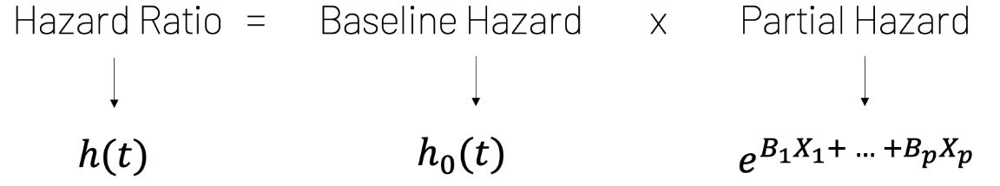该模型假设实验组与baseline组的风险比例随时间成正比
对相关列进行one-hot编码后，使用生存时间（tenure）和事件标志（churn）拟合 Cox Proportional Hazards 模型：
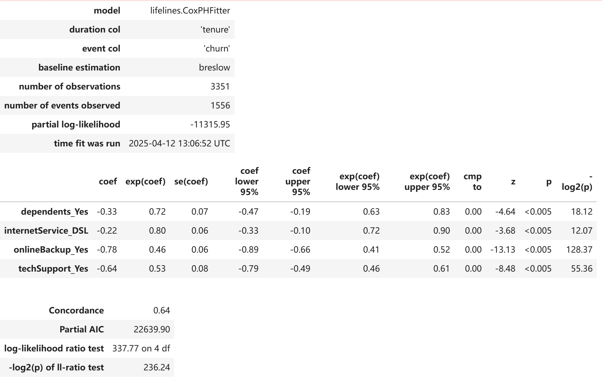评估Cox比例风险模型需要关注：
- 1.各协变量的统计显著性
- 2.模型参数的置信区间
- 3.各协变量对于风险比例的影响
从summary中可以看到这里的四个协变量在alpha=0.05时都是显著的，summary中也显示了模型参数的置信区间
各协变量对于风险比例的影响由下图给出，可以看出四个协变量独热编码对应值为1时，都会减少停止订阅的风险，减少的幅度从高到低为：`onlineBackup_Yes`, `techSupport_Yes`, `dependents_Yes`, `internetService_DSL`
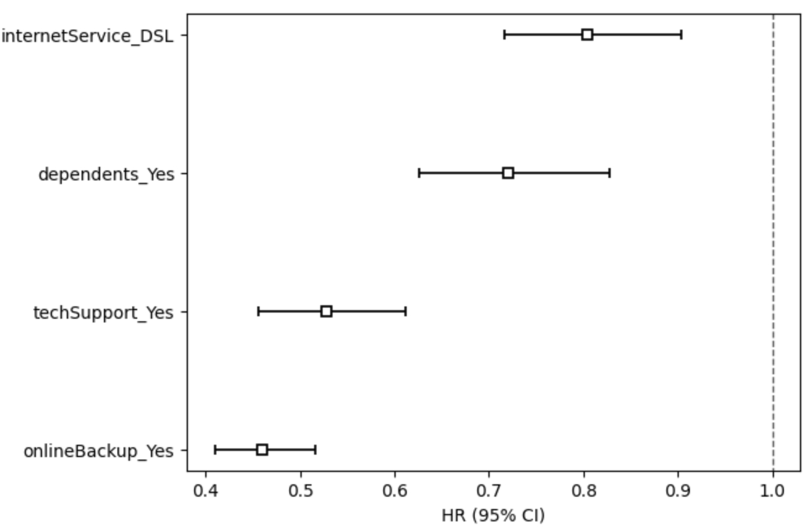需要进一步检查 Cox 风险比例模型的比例风险假设是否成立
1.Statistical Test检查是否满足假设，只有`dependents_Yes`满足了Cox模型的比例风险假设
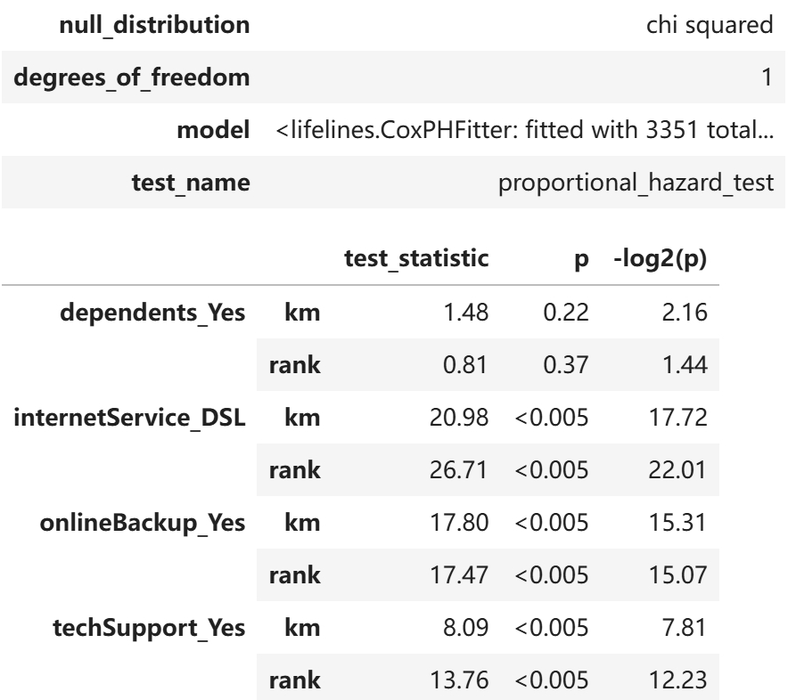2.Schoenfeld Residuals输出图像检查是否满足假设
理想情况下Schoenfeld Residuals不应随时间有明显变动，即残差线应尽量与水平平行并平坦。从图中可知`dependents_Yes`满足该假设，`internetService_DSL`对应的残差随时间而变动。`onlineBackup_Yes`对应的残差随时间变动最明显，`techSupport_Yes`对应的残差在时间线尽头附近被影响得最明显
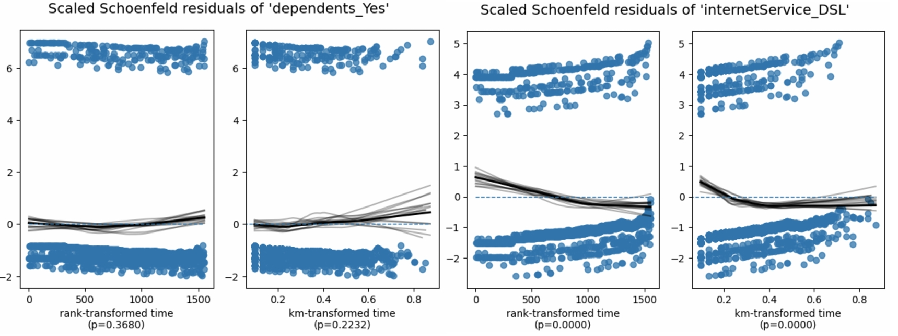 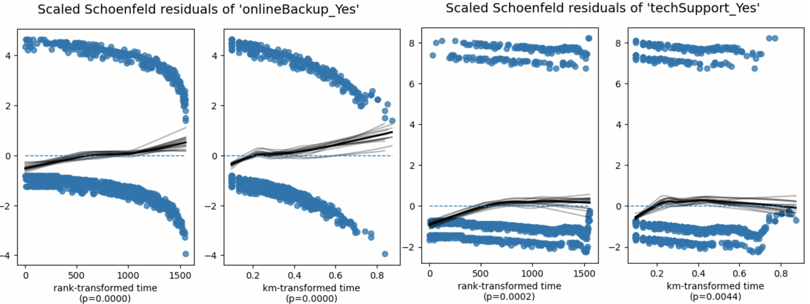3.Log-log Kaplan-Meier Plots检查是否满足假设
Log-Log Kaplan-Meier 曲线结果显示`internetService`不同组曲线间平行效果最差。`onlineBackup`, `techSupport`, `dependents`三项在log(timeline)为1-3之间时，各组曲线较为平行，但小于1或大于3时平行效果较差
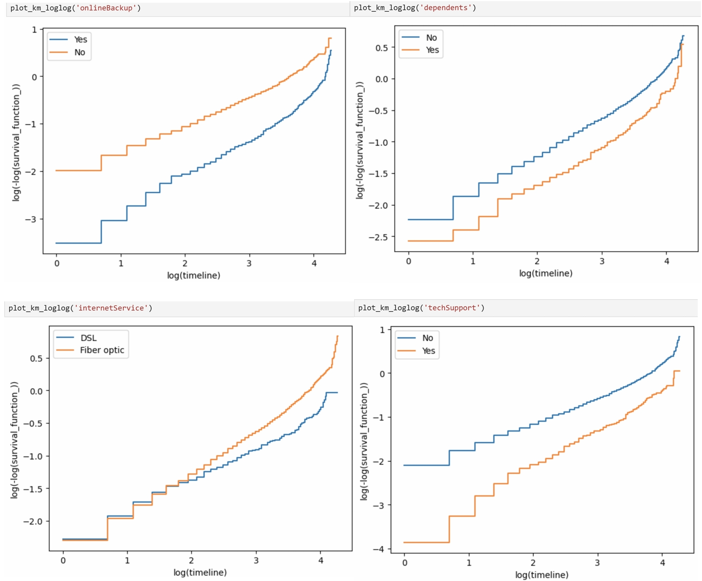检验结果为Cox风险比例模型用于该数据并不满足假设，有以下解决方案：
- 1.保持模型不变，建模目标为预测，关注损失度量来选择最终模型
- 2.对现有模型进行分层处理，对于少数违反风险比例假设的变量进行分层，为每个分层变量创建不同的基线风险
- 3.引入时间依赖变量，通过引入交互项来建模时间依赖变量，即扩展 Cox 比例风险模型
- 4.使用三次样条或分段常数风险
- 5.使用其他方法
除此之外，还可以进一步提取指定协变量取值的生存概率，用于后续分析，输出结果如图所示：
除此之外，还可以进一步提取指定协变量取值的生存概率，用于后续分析，输出结果如图所示：
5. Accelerated Failure Time 模型
加速失效时间模型（Accelerated Failure Time Model）与Cox比例风险模型不同，AFT模型并不直接建模风险比，而是通过对生存时间加速或减速来建模。它假设不同的协变量会以一定的速率影响事件发生的时间，如果某个协变量的系数为正，则说明该协变量会加速事件的发生，在此数据中表现为客户流失
对相关列进行one-hot编码后，使用 Log-Logistic AFT 模型进行拟合：
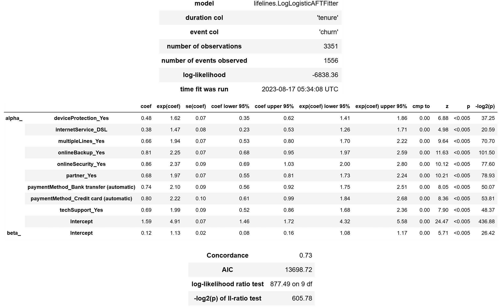评估AFT模型需要关注：
- 1.各协变量的统计显著性（p值），上图显示各协变量p值都小于0.05，可认为各协变量在统计学上都显著
- 2.模型参数的置信区间，上图亦有给出
- 3.各协变量对于风险比例的影响，举例来说`deviceProtection_Yes`的coef=0.48，exp(coef)=1.62，则用户使用设备保护时，用户的流失速度会增加1.62倍
根据上面显示的AFT 模型的参数图，可以看出`onlineSecurity_Yes`，`internetService_DSL`对流失速度的增加影响最小
评判AFT模型是否满足假设：
- 1.是否符合比例赔率假设，线条平行时满足假设
- 2.使用的特定分布是否适用，线条为直时满足假设
绘制按不同协变量分组的 Log-log 变换后的 Kaplan-Meier 曲线，结论在最后给出
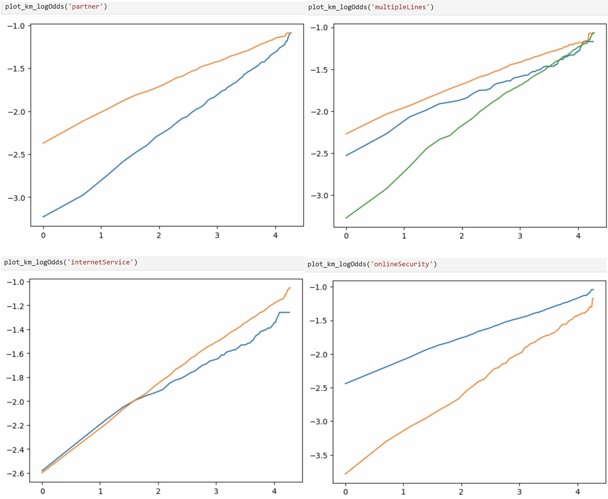 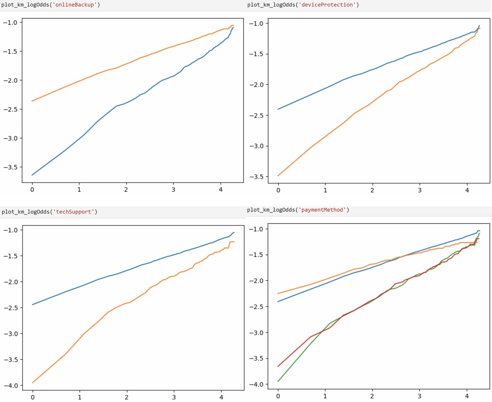可以看到，绝大多数图中的线是直的但不互相平行，证明所选的分布是正确的，但是AFT模型不适用于此数据的生存分析
6. 计算客户生涯价值
对于电信公司来说，最重要的是确定为各类型的客户的投入量。所以，我们进一步用生存模型的输出计算客户的生涯价值
创建所选变量的小组件，其中internal rate为后续计算净现值的参数，其他变量为0或1的分类变量，用于确定目标用户的类型
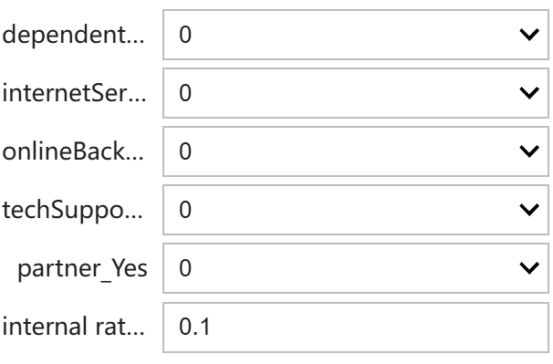通过用户生存概率等数据，可以进一步计算出选定计划的月度利润，平均每月期望收入，平均每月期望收入净现值，累计净现值
平均每月期望收入 = 月度利润 * 生存概率
平均每月期望收入净现值 = 平均每月期望收入 / (1 + internal rate of return ^ 合同月数)
净现值（NPV）考虑了货币的时间价值，可通过调整折现率反映不同风险水平。最终我们通过累计净现值来评估客户的生涯价值，即公司保证不会赔本的情况下对该类客户的最大支出
根据上图类型用户，计算出的各数据结果：
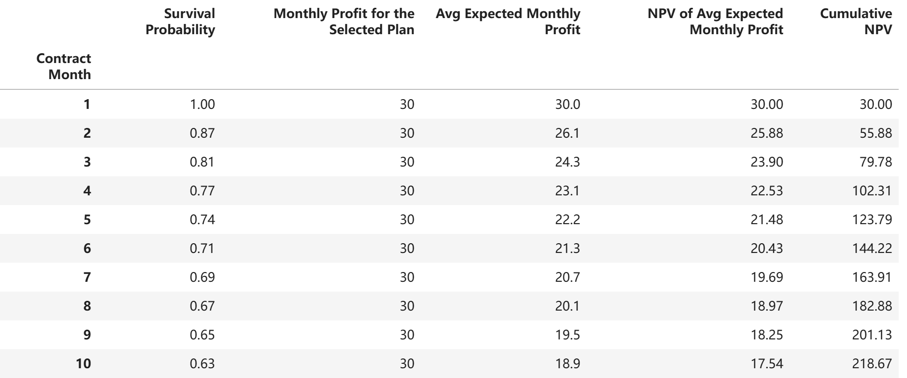结果表明：对于无家属及合作伙伴、使用DSL网络服务、无网络备份与科技支持的客户，在`internal rate of return` =0.1时，该类客户到第十个月仍保持订阅的概率为0.63，累计净现值为218.67，即若要实现盈利，电信公司前10个月在每个该类用户的投入不得超过218.67，累计净现值也显示了该类用户在一定订阅时间段的生涯价值
也可对以上生存概率、累计净现值等数据进行可视化，辅助公司决策
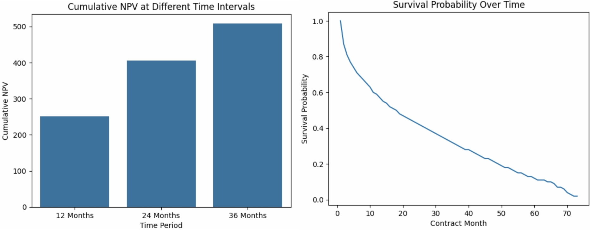该类用户在36个月的累计净现值约为500，生存概率在70天时降低至接近为零，电信公司需考虑到该类客户在连续订阅50个月后极有可能取消订阅的风险，并做出应对措施
7. 总结
本次生存分析任务使用Kaplan-Meier、Cox Proportional Hazards、Accelerated Failure Time等模型对电信客户不订阅的生存概率进行了分析，并且运用生存分析结果计算客户的生涯价值，为电信公司决策提供了帮助
生存分析结果显示：
性别、手机服务、银行或信用卡的支付方式不会显著影响用户的生存曲线，而其他客户数据均对生存曲线有显著性影响 。使用网络备份 、科技支持、存在家属依赖、使用DSL网络服务都会减少停止订阅的风险（即增加生存概率），并且增加的幅度按排序从高到低
以无家属及合作伙伴、使用DSL网络服务、无网络备份与科技支持的客户为例，该类用户在36个月的累计净现值约为500，生存概率在70天时降低至接近为零，电信公司需考虑到该类客户在连续订阅50个月后极有可能取消订阅的风险，并做出应对措施